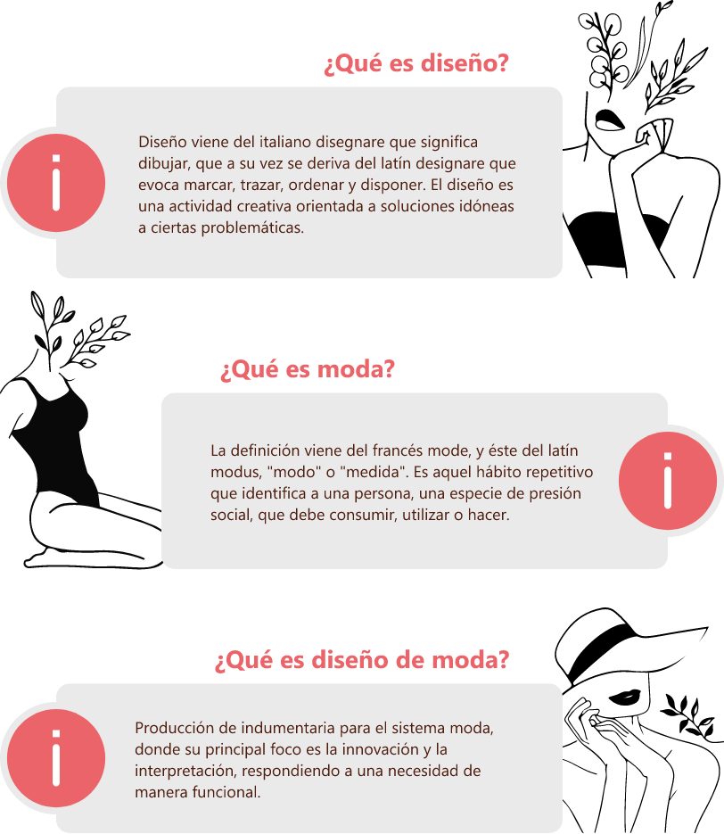
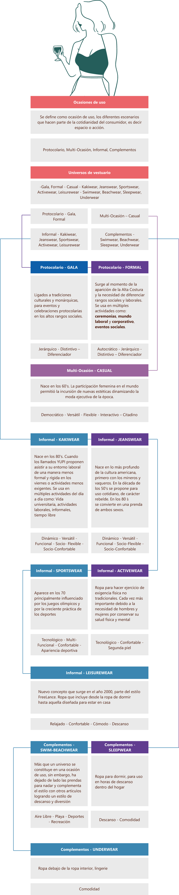
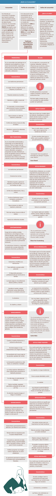
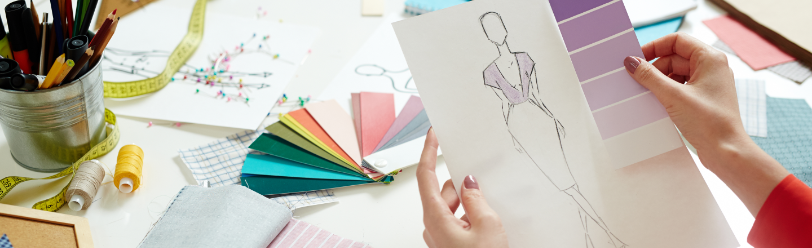

Introducción
1. Diseño y Moda
1.1. Fundamentación de Moda
En la actualidad una de las mayores falencias en la industria del sistema moda, es la articulación entre el diseñador (área creativa) y el patronista (área operativa), por lo tanto, es importante realizar al patronista una contextualización en el manejo de terminología y así afianzar la articulación entre las dos áreas.
Evolución de la moda
La moda ha ido evolucionando con el pasar de los años teniendo en cuenta diferentes factores que han afectado la sociedad. Quienes han aportado a estos cambios diferenciadores en la moda han dejado una gran huella.
INTRODUCCIÓN
El vestirse surge desde el momento en que las prendas pasan de ser una obligación de protegerse del clima a convertirse en una necesidad vital.
El vestido muestra la cultura, riqueza y grado de desarrollo de las civilizaciones y da una visión de las condiciones geográficas, económicas y culturales de los pueblos.
Historia del vestuario
Es un reflejo de los cambios sociales, políticos y culturales que tienen lugar alrededor del mundo a medida de los años.
Conforme el humano ha evolucionado, también lo ha hecho su vestimenta e indumentaria.
Período Paleolítico
Pieles, pelo de animales, hojas, huesos y conchas.
100.000 -
10.000 A.C.
Periodo Mesolítico
Broches hechos con hueso, abrigos, gorros, botas y zapatillas de cuero.
10.000 -
5.000 A.C.
Periodo Neolítico
Vestimenta de fibras animales y vegetales telar, pulseras de marfil.
10.000 -
5.000 A.C.
Egipcios
Shenti, con un cinturón de cuero, falda larga. Las sirvientas iban desnudas, Calzado fibras vegetales, cuero trenzado y papiro.
4.000 A.C.
Sumerios
Traje de lujo, faldón, chal, Kaunake, traje militar.
2500 A.C.
Babilonia
Tejedores de lana y de lino, túnica de talle recto y bordes con flecos, larga o corta, borlas y flecos.
2105 A.C.
Creta
Primer corsé, falda sujeta con un cinturón metal cubierto con un delantal, mangas ceñidas, anillos, pulseras y collares.
1700 A.C.
Persas
La prenda típica era una túnica, ropa interior y el bordado de aplicación, calzado anatómico, atados a los tobillos con correas y botones.
Siglo VI A.C.
Romanos
Túnica que los hombres usaban hasta las rodillas y las mujeres hasta los pies, bordados en hilos de oro.
Siglo I A.C.
Edad media
Zapatos a la polonesa, doble túnica hasta los pies, manto con broche en el centro, y un velo cubriendo la cabeza.
Siglos V - XV
Edad moderna
Prendas confeccionadas por sastres, faldas acampanadas, cuellos de encaje, crinolina, gorguera, prendas ajustadas, Corsé desde el busto hasta la cadera.
Siglos XV -
XVIII
Edad Contemporánea
Silueta imperio, vestidos delgados y vaporosos, vuelos y encajes en forma de cascada, vestido línea princesa, hombreras. cuello solapa.
Siglos XIX
Edad contemporánea
Silueta reloj de arena, el corsé de metal o de ballenas, faldas largas o blazers, sujetador, - Estética flapper - traje de baño - El uso del pantalón.
Siglo XX
Edad contemporánea
Silueta reloj de arena, el corsé de metal o de ballenas, faldas largas o blazers, sujetador, - Estética flapper - traje de baño - El uso del pantalón.
Siglo XXI
Evolución de las prendas
Las prendas han ido evolucionando con el pasar de los años teniendo en cuenta diferentes factores. Estos factores determinan la decisión que toma cada persona para elegir que ponerse a diario.
| FACTORES | |
| FÍSICAS | Clima Edad Estructura Género Salud |
| MODA | Historia Mercadotecnia Identidad |
| SOCIALES - CULTURALES | Clases sociales Labor Religión Trajes Típico |
| PSICOLÓGICOS | Estados de ánimo, Desórdenes Autoestima |
| SEXUALIDAD | Orientación sexual Indumentaria |
¿Por qué nos vestimos?
1.2. Universos de vestuario
Son conceptos de moda que responden a la necesidad de categorizar, segmentar y agrupar prendas de vestir, accesorios e indumentaria con características similares los cuales deben ser articulados según el consumidor o mercado objetivo de cada marca.
Cuando se habla de determinantes o factores del ¿por qué? nos vestimos, el mercado no se queda atrás, la segmentación, gamas de mercados, categorización de productos frente a los escenarios de El consumo va de la mano con la categorización de las prendas.
Principales
Haute Couture, Pret a Porter, Fast fashion, Slow Fashion
Transitorias
Vegan Fashion, Ethical fashion, Eco Fashion, Circle fashion
Haute Couture - Alta Costura
Prendas exclusivas a la medida del cliente. Prendas hechas a medida, de forma artesanal. - Chambre de commerce et d'indus trie de Paris
Pret a Porter - Listo para llevar
Prendas producidas en serie con patrones que se repiten. Industrialización de la moda. No son personalizadas ni exclusivas. - Ready to Wear.
Fast Fashion - Moda rápida
Trasladar propuestas de grandes casas de diseño, pasarelas a sus tiendas para capturar alguna tendencia, lo más rápido posible. Producción de prendas en tiempos muy cortos a un bajo costo. - Cápsulas.
Slow Fashion - Moda Lenta
Filosofía de consumo responsable. Concienciar sobre el impacto de las prendas de vestir en el medio ambiente, el agotamiento de recursos y la huella que está dejando la industria textil en la sociedad
Universos de vestuario - Ocasiones de uso
Son conceptos que responden a la necesidad de establecer unas categorías bajo las cuales es posible agrupar productos indumentarios de acuerdo con unos parámetros de afinidad y correlación.
Están constituidos por conjuntos de prendas de vestir y accesorios con características similares que deben presentarse agrupados coherentemente bajo conceptos de moda y estar articulados según las necesidades específicas del consumidor o mercado objetivo de cada marca.
Todas las marcas tienen una categorización de producto, la cual en gran parte se basa por las ocasiones de uso y los universos de vestuario, esto permite tener una mejor segmentación dependiendo de las necesidades del consumidor
1.3. Perfil y estilo de consumidor
Para el análisis de una marca o mercado se implementan conceptos que responden a la categorización de grupos de personas con características similares, permitiendo así que el producto o servicio sea mucho más específico y certero con el cliente o nicho de mercado.
Análisis del consumidor
1.4. Tendencias
Las Tendencias son una serie de informes visuales y de contextos que buscan brindar información global para entender qué está pasando en el mundo, Es la predicción del estado de ánimo, comportamientos y hábitos del consumidor, las tendencias mueven las industrias, no solo la industria de la moda, si no las de consumo, servicios, incluso pensamiento.
¿Qué es?
Las tendencias buscan entender qué está pasando en el contexto mundial. "Tendencia" significa desarrollarse o cambiar en una dirección general.
Es la predicción del estado de ánimo, comportamientos y hábitos del consumidor.
¿Quienes?
Un grupo de personas dedicadas a ser cazadores de tendencias, los llamados "coolhunter" detectar y predecir las novedades que vendrán en los campos de la moda y el consumo.
Características de las tendencias
01 Ritmo
Forma en la que sucede y se alternan una serie de dinámicas, conceptos y sentires que componen la tendencia
02 Información
Toda la variedad de información que puedan complementar el concepto de la tendencia
03 Diversificación
Diferentes variables en donde se puede manifestarse la tendencia, sus conceptos, y historias
04 Tecnología
Medios por los cuales se revela la información y su implementación
¿Cómo identificar una tendencia?
METATENDENCIAS
“Una metatendencia significa un cambio multidimensional, por oposición a un cambio lineal o secuencial. Son los cambios sustanciales en nuestra estructura socioeconómica.”
Blink Design – Laura Novik
MACROTENDENCIAS
Son las tendencias donde se involucran muchas áreas, sistemas productivos y aspectos emocionales.
MICROTENDENCIAS
Son las que dan origen a las llamadas “modas pasajeras”, cambian cada temporada, revolucionan el mercado, abren un abanico de posibilidades y promueven el consumo.
¿Quiénes estudian las tendencias?
INEXMODA
PREMIÉRE VISION PARIS
FASHION TRENDSETTER

FASHION SNOOP
WGSN
PECLERS PARIS
La clave es: Identifiquemos los principales factores que afectan el pronóstico de las tendencias.
Estaciones: Las tendencias se basan en las estaciones de primavera (spring), verano (Summer), otoño (Autumn) e invierno. (Winter)
1.5. Moodboard - Cuadro metamórfico
Los MoodBoards son tableros creativos que permiten visualizar y conceptualizar ideas para el desarrollo de productos o servicios, consiste en recolectar imágenes que muestran lo que se quiere expresar, esta es una forma implementada en las áreas de diseño para dar a conocer las ideas de una manera mucho más dinámica que permite contextualizar a la persona a la que se está entregando la idea.
¿Qué es un moodboard?
Como su nombre lo indica es un tablero de inspiración visual que logra conectar las ideas en un solo espacio por medio visual o físico.
Reúne imágenes, colores, texturas, frases... con la intención de hacer tangible un concepto o un ambiente.
¿Para qué sirve?
Generar una inspiración conceptual donde se plasman sentimientos o estados de ánimo que desean evocar.
¿Cómo se hace?
Físico - Recortes de revista, texturas, elementos
Digital - Imágenes digitales, complementos
Proceso para desarrollar un moodboard
PALABRAS CLAVES
IMÁGENES
DIAGRAMACIÓN
Palabras esenciales, frases y/o conceptos
Realiza un banco de imágenes acorde a los conceptos, referentes, paleta de color y demás
Empieza a hacer la diagramación en tu moodboard, puedes hacerlo lineal o abstracto
HIERRAMIENTAS
Canva – PowerPoint
Cuadro metamórfico
¿Qué es un cuadro metamórfico?
Es una metodología de diseño que permite mostrar fácilmente un concepto definido y que se vea reflejado armónicamente en los productos realizados. Metodología tomada del diseño industrial.
¿Para qué sirve?
Esta metodología permite lograr variedad de diseños rápidamente, facilita la realización de evoluciones y modificaciones de diseño en una colección sin que se pierda la coherencia conceptual
¿Cómo iniciar?
Tipologías: Elegir las tipologías a trabajar
Siluetas: Definir el tipo de silueta de la prenda
Visualizar partes de las prendas por separado - Cuellos. bolsillos, mangas, escotes, sistema de cierre, sistema de ajuste
¿Cómo se realiza?
Se organizan las ideas utilizando un esquema tipo tabla. Para generar varias opciones de cada una de esas partes. (estás siempre deben comunicar el concepto de la marca)
La clave es: Cada variación debe ser coherente con el concepto, las siluetas formas, sensibilidad y demás percepciones definidas en los conceptos.
Ejemplo:
¿Cómo hacer que las variaciones basadas en un moodboard sean coherentes con un concepto?
Nota: Todo el texto, tiene imágenes visuales de ref. Las cuales complementan la información entregada - anexar imágenes ppt de referencia.
Actividad didáctica

¡Pon a prueba tu conocimiento!
La siguiente actividad tiene como propósito validar los conocimientos relacionados con el tema Normativa vigente proceso ECCL.
IniciarGlosario
Bidimensional:que se representa según su altura y su anchura, y no su profundidad.
Diseño:actividad creativa orientada a soluciones idóneas a ciertas problemáticas.
Moda: hábito repetitivo que identifica a una persona, una especie de presión social, que debe consumir, utilizar o hacer.
MoodBoard:su traducción literal es mapa de inspiración y aunque su uso está muy asociado al ámbito de la decoración de interiores o la moda, realmente se utiliza en entornos creativos muy diversos, desde el diseño de productos o servicios al audiovisual o el diseño gráfico.
Pirognóstico:ensayo sin componentes reactivos, quiere decir, reconocimiento de los componentes, mediante la aplicación adecuada del fuego.
Software:término informático que hace referencia a un programa o conjunto de programas de cómputo, así como datos, procedimientos y pautas que permiten realizar distintas tareas en un sistema informático.
Tipología:estudio de los tipos o modelos que se usan para clasificar en diversas ciencias o disciplinas
Vectores:en Software de diseño, son líneas que se crean y permiten, expandir, modificar, a el tamaño que sea sin pixelarse por que se unen por coordenadas matemáticas del programa y no se generan por números fijos.
Material complementario
Referencias bibliográficas
American Society for Testing Materials Ed. Textiles. Baltimore: Editorial Staff, 2003. Print. Annual Book of ASTM Standards No. 7. - Sistema de Bibliotecas SENA:https://sena-primo.hosted.exlibrisgroup.com/permalink/f/1j5choe/sena_aleph000051551
Blackman, C. Y Rodríguez T. (2012). 100 años De Moda. Barcelona: Blume. Print - Sistema de Bibliotecas SENA:https://sena-primo.hosted.exlibrisgroup.com/primo-explore/fulldisplay?docid=sena_aleph000060086&vid=SENA&search_scope=sena_completo&tab=sena_completo&lang=es_ES&context=L
Castellanos O. Fumeque A. Y Ramirez D. (2011). Análisis De Tendencias: De La Información Hacia La Innovación. Bogotá: Universidad Nacional De Colombia, 2011. Print. - Sistema de Bibliotecas SENA:https://sena-primo.hosted.exlibrisgroup.com/permalink/f/1j5choe/sena_aleph000007947
Fashion Snoops, Sistema de Bibliotecas SENA:https://www-fashionsnoops-com.bdigital.sena.edu.co/Default.aspx
Lafuente M. Navarro J. Y Navarro J. (2005). Ilustración De Moda. Rivas-Vaciamadrid: H Kliczkowski, 2005. Print. - Sistema de Bibliotecas SENA:https://sena-primo.hosted.exlibrisgroup.com/permalink/f/1j5choe/sena_aleph000025549
Laver, J. Albizua, H. Y Fortea, B. (1990). Breve Historia Del Traje Y La Moda. 10a Edición. ed. Madrid: Cátedra, 1990. Print. Ensayos Arte Cátedra. – Sistema de Bibliotecas SENA:https://sena-primo.hosted.exlibrisgroup.com/permalink/f/1j5choe/sena_aleph000063748
Navarro, J. Y Lafuente, M. (2010). Ilustración De Moda: Dibujo Plano. Barcelona: Lexus Editores. Print. - Sistema de Bibliotecas SENA:https://sena-primo.hosted.exlibrisgroup.com/permalink/f/q6j6k0/sena_aleph000023241
Szkutnicka, Basia, Cuenca, Cris Tr, Koyama, Ayaco Il, and Mues, Melanie Diseñadora. El Dibujo Técnico De Moda Paso a Paso. Barcelona: Editorial Gustavo Gili, 2010. Print. - Sistema de Bibliotecas SENA:https://sena-primo.hosted.exlibrisgroup.com/permalink/f/1j5choe/sena_aleph000057728
Fotografías y vectores tomados de https://www.shutterstock.com/ y https://www.freepik.es/
Licencia Creative Commons
CC BY-NC-SA
Ver licencia.